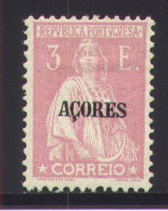
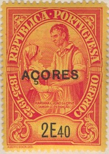

(Large overprint, reduced size)
Return To Catalogue -
Acores part 3 - Angra
- Horta - Ponta
Delgada
(From 1932 on the stamps of Portugal were
used)
Note: on my website many of the
pictures can not be seen! They are of course present in the
catalogue;
contact me if you want to purchase the catalogue.
Note: I have seen the stamps of 1868, 1871 and 1880 with overprint 'ACORES' (small and large overprint, all uncancelled), but with an additional small horizontal line, covering the value at the top. I do not know if these are essays or forgeries.
(Large overprint, reduced size)
2 1/2 r olive
The overprint exists in large size (1876) and small size (1882).
Value of the stamps |
|||
vc = very common c = common * = not so common ** = uncommon |
*** = very uncommon R = rare RR = very rare RRR = extremely rare |
||
| Value | Unused | Used | Remarks |
| 2 1/2 r | * | * | Large overprint |
| 2 1/2 r | c | c | Small overprint |
Large size:


Small size (1882):


Large overprint 5 r black (overprint red) 25 r blue 25 r lilac 25 r brown 50 r blue
Value of the stamps |
|||
vc = very common c = common * = not so common ** = uncommon |
*** = very uncommon R = rare RR = very rare RRR = extremely rare |
||
| Value | Unused | Used | Remarks |
| 5 r | ** | ** | |
| 25 r blue | *** | ** | |
| 25 r lilac | ** | * | |
| 25 r brown | ** | * | |
| 50 r | *** | *** | |
Small overprint 5 r black (overprint red, king Louis facing the left) 5 r black (overprint black or red, king Louis facing the right) 10 r green 20 r red 25 r brown 25 r lilac 50 r blue 500 r black 500 r violet
Value of the stamps |
|||
vc = very common c = common * = not so common ** = uncommon |
*** = very uncommon R = rare RR = very rare RRR = extremely rare |
||
| Value | Unused | Used | Remarks |
| 5 r | * | * | King Louis facing the left |
| 5 r | * | * | King Louis facing the right, black or red overprint |
| 10 r | * | * | |
| 20 r | * | * | |
| 25 r brown | * | * | |
| 25 r lilac | * | c | |
| 50 r | * | * | |
| 500 r black | *** | *** | |
| 500 r violet | *** | *** | |
2 r black (overprinted in red or black)
Value of the stamps |
|||
vc = very common c = common * = not so common ** = uncommon |
*** = very uncommon R = rare RR = very rare RRR = extremely rare |
||
| Value | Unused | Used | Remarks |
| 2 r | * | * | Red overprint |
| 2 r | c | c | Black overprint |

5 r orange 10 r red 15 r brown 20 r violet 25 r green 50 r blue 75 r red 80 r green 100 r brown 150 r red 300 r blue on lilac 500 r violet 1000 r black
Value of the stamps |
|||
vc = very common c = common * = not so common ** = uncommon |
*** = very uncommon R = rare RR = very rare RRR = extremely rare |
||
| Value | Unused | Used | Remarks |
| 5 r | * | c | |
| 10 r | * | * | |
| 15 r | c | c | |
| 20 r | * | * | |
| 25 r | * | * | |
| 50 r | * | * | |
| 75 r | * | * | |
| 80 r | * | * | |
| 100 r | * | * | |
| 150 r | ** | ** | |
| 300 r | ** | ** | |
| 500 r | ** | ** | |
| 1000 r | *** | *** | |
These stamps were cancelled with "1394 Centenario 1894".
(Reduced size)
2 1/2 r black (overprint red vertically at the right hand side) 5 r yellow 10 r lilac 15 r brown 20 r violet 25 r green and lilac 50 r blue and brown 75 r red and brown 80 r green and brown 100 r brown and grey 150 r red and brown 200 r blue and brown 300 r black and brown 500 r brown and blue 1000 r violet and blue
Value of the stamps |
|||
vc = very common c = common * = not so common ** = uncommon |
*** = very uncommon R = rare RR = very rare RRR = extremely rare |
||
| Value | Unused | Used | Remarks |
| 2 1/2 r | * | * | |
| 5 r | * | * | |
| 10 r | * | * | |
| 15 r | * | * | |
| 20 r | ** | ** | |
| 25 r | * | * | |
| 50 r | ** | ** | |
| 75 r | *** | *** | |
| 80 r | *** | *** | |
| 100 r | *** | *** | |
| 150 r | *** | *** | |
| 200 r | *** | *** | |
| 300 r | *** | *** | |
| 500 r | R | R | |
| 1000 r | R | R | |
Forgeries made by Fournier (?) exist of the values 50, 75, 80 and 100 r. The distinguishing characteristics are: the impression is quite rough on the forgeries. Usually, the 'A' of 'PORTUGAL' is filled in. At the back a small latin text appears, it is spelt 'nunc' in the originals, but 'nune' in the forgeries. The star in this text has 8 rays in the forgery, but only 6 in the genuine stamps. For more information on these forgeries, click here, or check the following website: http://www.tabacaria.org/Selos/Continoutros/StAntonio.htm.


1/4 c olive 1/2 c black (overprint red) 1 c green 1 c brown 1 1/2 c brown 1 1/2 c green 2 c red 2 c orange 2 1/2 c lilac 3 c red 3 c blue 3 1/2 c green 4 c green 4 c orange 5 c blue 5 c brown 6 c red 6 c brown 7 1/2 c brown 7 1/2 c blue 8 c violet 8 c blue 8 c red 10 c brown 10 c orange 12 c violet 12 c green 13 1/2 c blue 14 c blue on yellow 15 c lilac 15 c black (overprint red) 16 c blue 20 c brown on green 20 c brown 20 c green 20 c grey 24 c blue 25 c red 30 c brown on red 30 c brown on yellow 30 c brown 32 c green 36 c red 40 c blue 40 c brown 40 c green 48 c red 50 c orange on red 50 c yellow 60 c blue 64 c blue 64 c brown 75 c red 80 c red 80 c violet 80 c green 90 c blue 96 c red 1 E violet 1 E green on blue 1 E grey 1 E red 1.10 E brown 1.20 E green 1.20 E brown 1.25 E blue 1.50 E lilac 1.60 E blue 2 E green 2.40 E green 3 E red 3.20 E green 5 E green 10 E red 20 E blue
Value of the stamps |
|||
vc = very common c = common * = not so common ** = uncommon |
*** = very uncommon R = rare RR = very rare RRR = extremely rare |
||
| Value | Unused | Used | Remarks |
| 1/4 c | vc | vc | |
| 1/2 c | vc | vc | |
| 1 c green | c | c | |
| 1 c brown | vc | vc | |
| 1 1/2 c brown | c | c | |
| 1 1/2 c green | c | c | |
| 2 c red | * | c | |
| 2 c orange | vc | vc | |
| 2 1/2 c | c | vc | |
| 3 c red | vc | vc | |
| 3 c blue | vc | vc | |
| 3 1/2 c | c | vc | |
| 4 c green | vc | vc | |
| 4 c orange | vc | vc | |
| 5 c blue | c | c | |
| 5 c brown | vc | vc | |
| 6 c red | c | vc | |
| 6 c brown | vc | vc | |
| 7 1/2 c brown | * | c | |
| 7 1/2 c blue | c | c | |
| 8 c violet | c | c | |
| 8 c blue | vc | vc | |
| 8 c red | vc | vc | |
| 10 c brown | c | c | |
| 10 c orange | c | c | |
| 12 c violet | c | c | |
| 12 c green | c | vc | |
| 13 1/2 c | c | c | |
| 14 c | c | c | |
| 15 c lilac | c | c | |
| 15 c black | c | vc | |
| 16 c | c | c | |
| 20 c brown on green | *** | * | |
| 20 c brown | vc | vc | |
| 20 c green | c | c | |
| 20 c grey | c | vc | |
| 24 c | c | vc | |
| 25 c | c | vc | |
| 30 c brown on red | *** | *** | |
| 30 c brown on yellow | * | * | |
| 30 c brown | c | c | |
| 32 c | c | c | |
| 36 c | c | vc | |
| 40 c blue | c | c | |
| 40 c brown | c | vc | |
| 40 c green | c | c | |
| 48 c | c | c | |
| 50 c orange on red | * | * | |
| 50 c yellow | c | c | Two shades of yellow |
| 60 c | c | c | |
| 64 c blue | c | ||
| 64 c brown | * | * | |
| 75 c | c | c | Two shades of red |
| 80 c red | c | c | |
| 80 c violet | c | c | |
| 80 c green | c | c | |
| 90 c | c | c | |
| 96 c | * | * | |
| 1 E violet | c | c | |
| 1 E green on blue | * | * | |
| 1 E grey | c | c | |
| 1 E red | * | * | |
| 1.10 E | * | * | |
| 1.20 E green | c | c | |
| 1.20 E brown | * | * | |
| 1.25 E | c | c | |
| 1.50 E | * | * | |
| 1.60 E | * | c | Two shades of blue |
| 2 E | * | c | |
| 2.40 E | ** | ** | |
| 3 E | ** | ** | |
| 3.20 E | * | * | |
| 5 E | * | * | |
| 10 E | ** | ** | |
| 20 E | *** | *** | |
Surcharged (1929)
'4 c.' and bars on 25 c red '4 c.' and bars on 60 c blue '10 c.' and bars on 25 c red '12 c.' and bars on 25 c red '15 c.' and bars on 25 c red '20 c.' and bars on 25 c red '40 c.' and bars on 1.10 E brown
Value of the stamps |
|||
vc = very common c = common * = not so common ** = uncommon |
*** = very uncommon R = rare RR = very rare RRR = extremely rare |
||
| Value | Unused | Used | Remarks |
| 4 c on 25 c | vc | vc | |
| 4 c on 60 c | c | c | |
| 10 c on 25 c | c | vc | |
| 12 c on 25 c | c | c | |
| 12 c on 25 c | c | c | |
| 15 c on 25 c | c | c | |
| 20 c on 25 c | c | c | |
| 40 c on 1.10 E | c | c | |
Be careful! Forgeries of the 'ACORES' overprint exist. For a detailed description see 'Focus on forgeries'.
I have seen the 1 c green and a 2 c red stamp with slanting overprint "ASSISTENCIA" (in red on the 1 c value), these are charity stamps.


2 c orange 3 c green 4 c blue (overprint red) 5 c red 10 c blue 16 c red 25 c red 32 c green 40 c green and red (overprint red) 48 c brown 50 c green 64 c brown 75 c grey (overprint red) 80 c brown 96 c red 1.50 E blue on blue (overprint red) 1.60 E blue (overprint red) 2 E green on green (overprint red) 2 E 40 red on yellow (overprint red) 3 E 20 black on green (overprint red)
2 c orange 3 c blue 4 c green 5 c brown 6 c orange 15 c green 20 c violet 25 c red 32 c green 40 c brown 50 c brown 75 c red 1 E violet 4.50 E green
2 c brown 3 c blue 4 c orange 5 c olive 6 c brown 15 c brown 25 c grey 32 c green 40 c green 96 c orange 1.60 E grey 4.50 E yellow
2 c blue 3 c green 4 c red 5 c olive 6 c brown 15 c black 16 c violet 25 c blue 32 c green 40 c brown 50 c orange 80 c grey 96 c red 1 E brown 1.60 E blue 4.50 E yellow

{kind=link}
{kind=link}